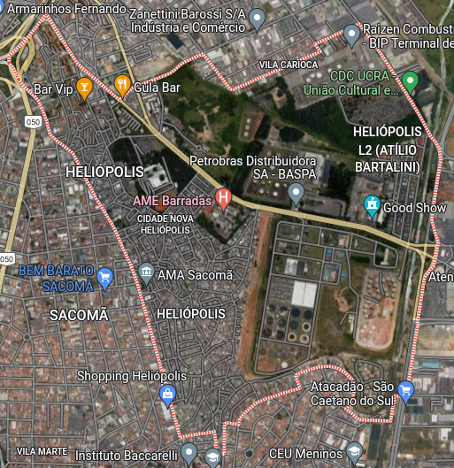
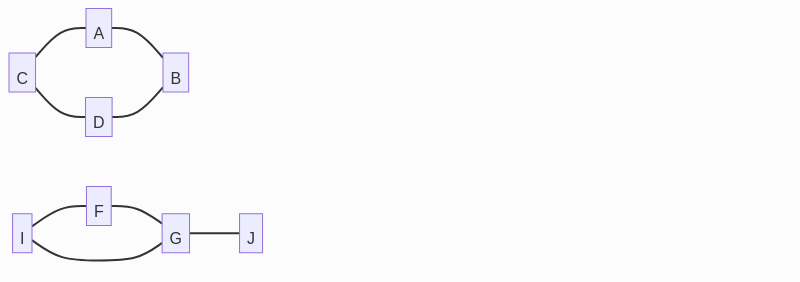

Grafos e Árvores
Introdução a grafos

Enchentes em Heliópolis
- Alguma área está isolada do resto da comunidade?
- Como sair de sua casa até um destino?
- Qual o mínimo de intervenções necessárias para que todos pontos isolados sejam restaurados?
Como representar esse mapa?

Grafo
- $V = {1 \dots N}$ - conjunto de vértices
- $E = { (x, y) | x, y \in V; x \neq y}$
- conjunto de arestas (edges)
- sai de $x$ e chega em $y$
E o mapa?
Alguma área está isolada do resto da comunidade?
- o que cada vértice do grafo representa?
- qual relação entre vértices uma aresta representa?
- essa relação tem direção ou é sempre simétrica?
- essa relação tem pesos/preferências ou todas arestas são equivalentes?
Tipos de grafos
- simetria:
- não direcionado: associações são sempre bi-direcionais (${i,j} \in E \Leftrightarrow {j,i} \in E$)
- direcionado: associações podem ou não ser bi-direcionais
- pesos:
- arestas são todas equivalente
- cada aresta tem um número real associado a ela
Em alguns problema específicos podem ser permitidos loops (${i, i} \in E$) ou mais de uma aresta por par de vértices. Isso não deve ocorrer nos problemas desta disciplina.
Outros exemplos
- dependência entre partes de produção
- traçar caminhos em um mapa
- conectar cidades com mínimo de ligações
- criação de agrupamentos ou equipes
Representação computacional
Representação formal: - $V = {1 \dots N}$ - $E = { (x, y) | x, y \in V; x \neq y}$
Como transformar em uma representação computacional eficiente?
Representação computacional
- $V$ pode ser representado só pelos números mesmo. Só preciso guardar $|V| = N_v$
- $E$ pode ser representado como uma matriz $A$ quadrada com $N_v$ linhas e colunas
$$ A_{i,j} = \begin{cases} 1 \text{ se } {i,j} \in E \ 0 \text{ caso contrário } \end{cases} $$
Representação computacional
- quantas arestas chegam no vértice $i$?
- quantas arestas saem no vértice $i$?
- como é a matriz se o grafo for não direcionado?
- e se tiver pesos?